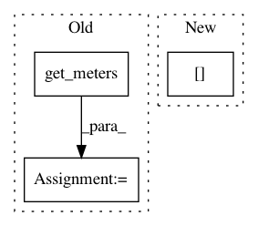

86793391e38bf88c119699bfb1993cb0a7a33968,fairseq/metrics.py,,get_smoothed_values,#Any#,200
Before Change
def get_smoothed_values(name: str) -> Dict[str, float]:
Get smoothed values aggregated under a given *name*.
meters = get_meters(name)
return meters.get_smoothed_values()
def state_dict():
After Change
Raises:
KeyError: if no metrics have been logged under *name*.
return _aggregators[name].get_smoothed_values()
def state_dict():
In pattern: SUPERPATTERN
Frequency: 4
Non-data size: 3
Instances
Project Name: pytorch/fairseq
Commit Name: 86793391e38bf88c119699bfb1993cb0a7a33968
Time: 2020-01-11
Author: myleott@fb.com
File Name: fairseq/metrics.py
Class Name:
Method Name: get_smoothed_values
Project Name: pytorch/fairseq
Commit Name: 86793391e38bf88c119699bfb1993cb0a7a33968
Time: 2020-01-11
Author: myleott@fb.com
File Name: fairseq/metrics.py
Class Name:
Method Name: get_smoothed_value